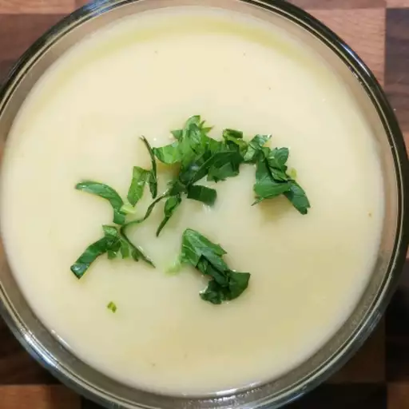

Vegetarian Potato-Leek Soup

Description
Healthy potato-leek soup for vegetarians.
Ingredients
- ¼ cup olive oil, divided
- 2 leeks, chopped
- 1 (32 fluid ounce) container vegetable broth
- 1 ¾ cups water
- 2 pounds potatoes, cut into cubes
- ⅜ teaspoon cayenne pepper
- ¼ teaspoon salt
Steps
-
Heat 2 tablespoons olive oil in a stock pot over medium
heat. Cook and stir leeks in hot oil until completely
softened, adding remaining olive oil in small amounts
as you cook the leeks, about 10 minutes.
-
Pour vegetable broth and water into the pot; add potatoes.
Bring mixture to a boil, reduce heat to medium-low, and
cook at a simmer until the potatoes are completely tender,
about 25 minutes.
-
Pour potato mixture into a blender no more than half full.
Cover and hold lid down; pulse a few times before leaving
on to blend. Puree in batches until smooth. Stir cayenne
pepper and salt into the soup.